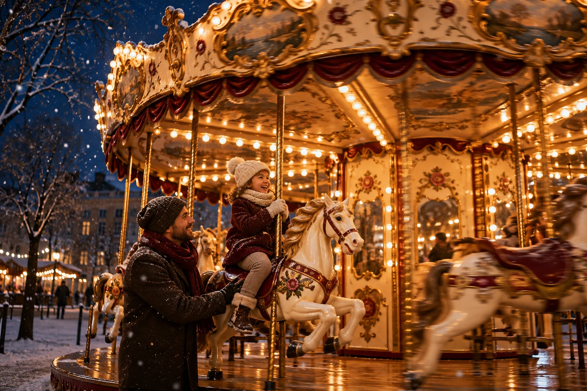

KOLOZSVÁR · HORIA DEMIAN SPORTCSARNOK
A tél új
otthonra lel
az örömben.
Egy lépés a jégen. Egy kör a körhintán.
És még egy ok, hogy együtt mozduljunk ki.
Idő egy kis örömre.
A Horia Demian Sportcsarnok parkolójaKOLOZSVÁRI TÉLI VÁSÁR
Kevesebb rohanás.
Több téli élmény.
Van, amikor egy egyszerű kiruccanásból lesz a legkedvesebb emlék. Találkozzunk a jégpályán, üljünk fel a körhintára, és szánjunk még egy kis időt egymásra.
EGYÜTT A JÉGEN
Csússz bele
a télbe.
Az első bizonytalan mozdulatok, vagy még egy kör a saját tempódban. A jégpályán kipirul az arcunk, hangosabb a nevetés, és más ritmusban telik az idő.

KÖRBE-KÖRBE AZ ÖRÖMMEL
Egy kis kör.
Egy nagy mosoly.
Meleg fények, mesebeli lovacskák és az ismerős „még egyszer!” A körhinta egy kis gyermekkori varázst csempész a téli napokba.
KÉT KÖR KÖZÖTT
És egy kis szünet
jó ízekkel.
A vásáron két árus is vár, ha megpihennél a korcsolyázás és a körhintázás között.
Kínálatukkal hamarosan jelentkezünk.
TERVEZZ EGY KIS ÖRÖMÖT
Apró dolgok.
Maradandó emlékek.
Az árlista készül.
A látogatás előtt itt találod majd.
Korcsolyapálya
Árak hamarosanKörhinta
Árak hamarosanITT TALÁLKOZUNK
Mozdulj ki.
Lépj be a télbe.
Hozd el a szeretteidet és a kedved egy kis kiruccanáshoz.
A többi az első körrel kezdődik.
10:00 — 22:00
A rendezvény időpontját hamarosan bejelentjük.